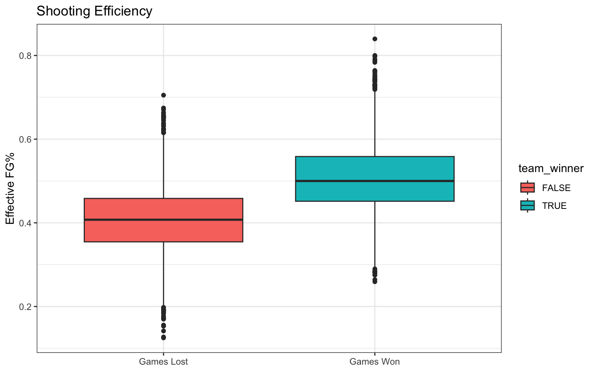
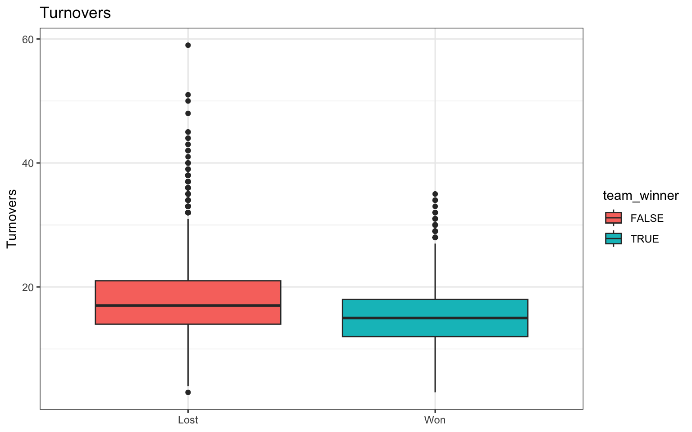
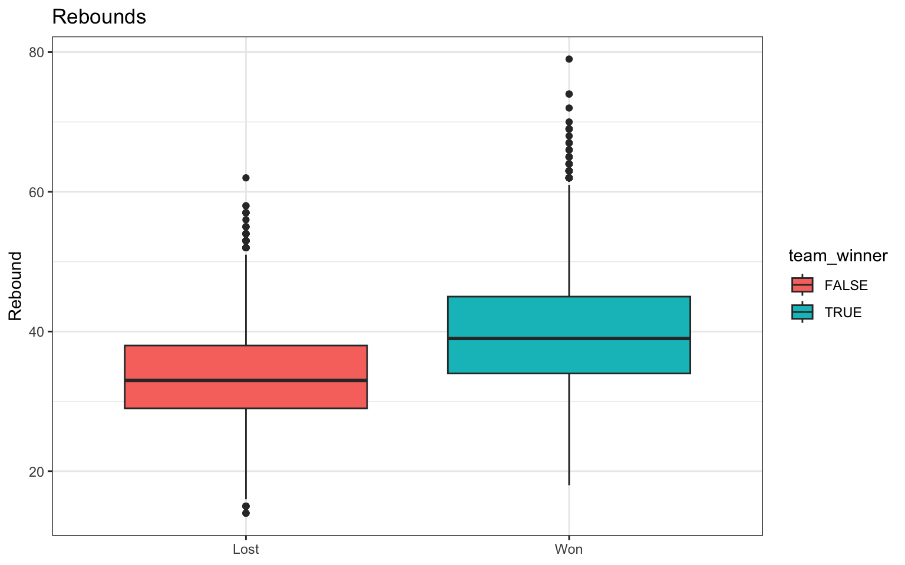
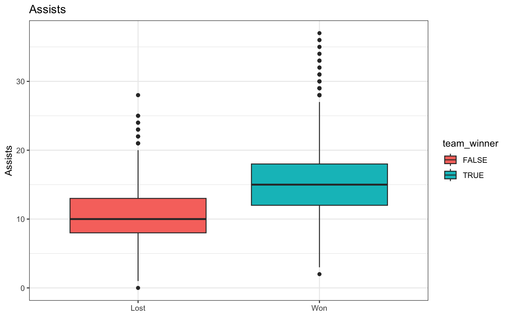
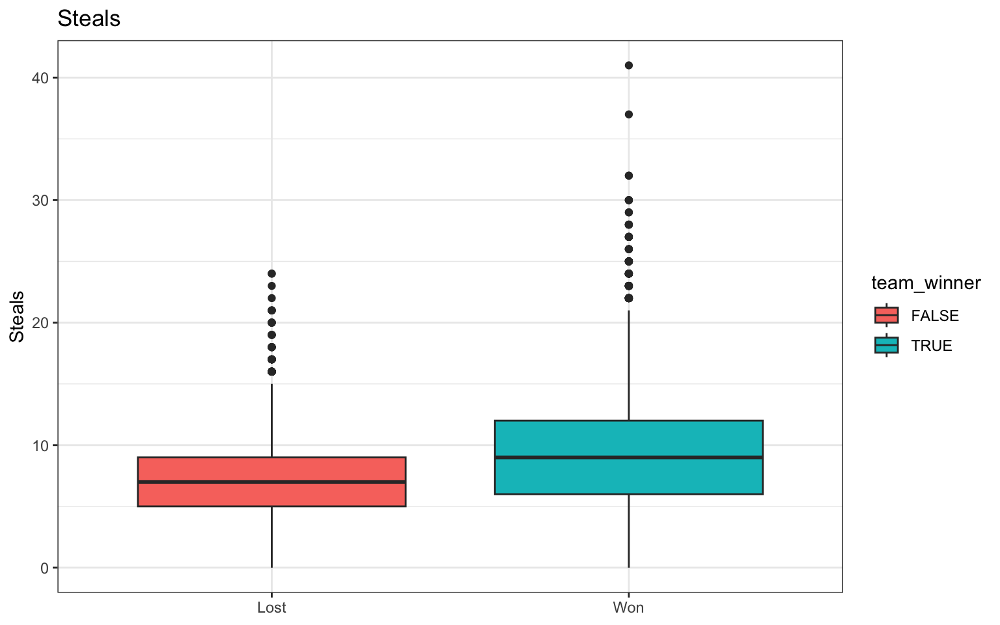
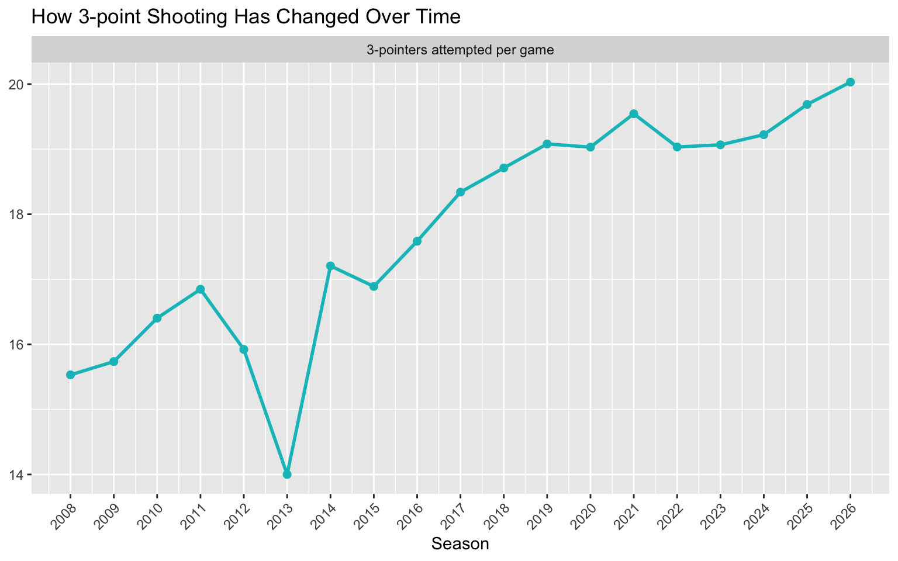

The average in each stats category for the 2025-2026 season





# A tibble: 2 × 6
team_winner avg_efg avg_turnovers avg_rebounds avg_assists avg_steals
<lgl> <dbl> <dbl> <dbl> <dbl> <dbl>
1 FALSE 0.407 17.9 33.4 10.7 7.19
2 TRUE 0.506 14.9 39.8 15.5 9.40